Design Development
CAD & Structural Analysis
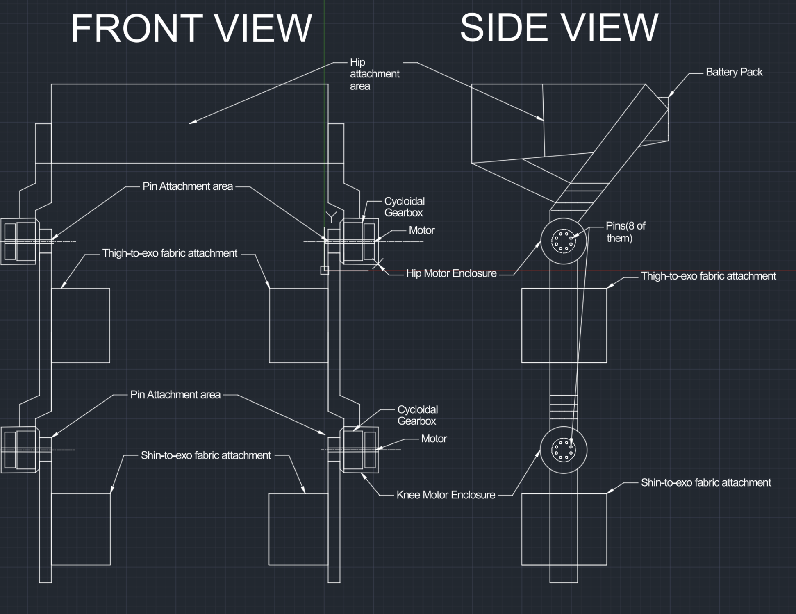
Planning & Measurements
Defined biomechanical constraints, applied anthropometric datasets, and mapped mechanical interfaces to ensure ergonomic fit across a wide range of body sizes. This foundational phase established design parameters for all downstream iterations.
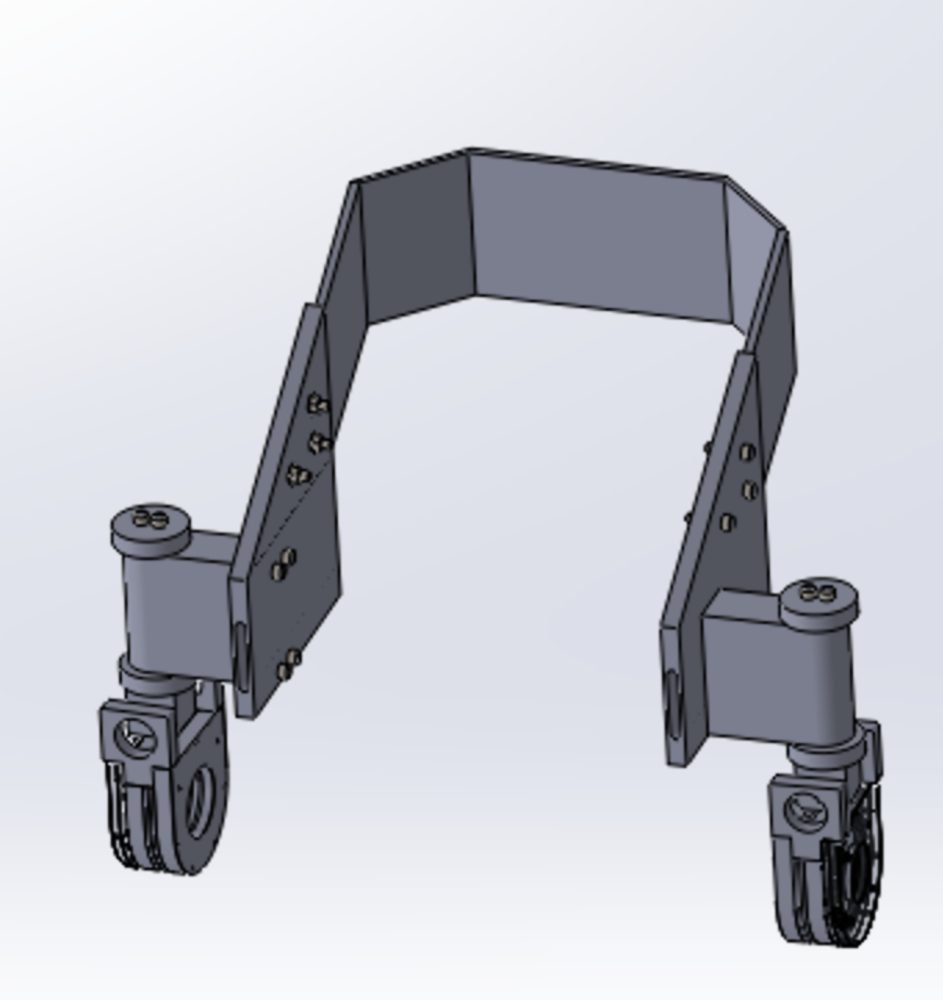
CAD Version 1
Early exploratory model used to validate overall architecture, kinematics, and packaging of a 2-DOF hip mechanism. Design was intentionally unoptimized, with limited consideration for mass, stress distribution, or manufacturability—focused on functional validation.
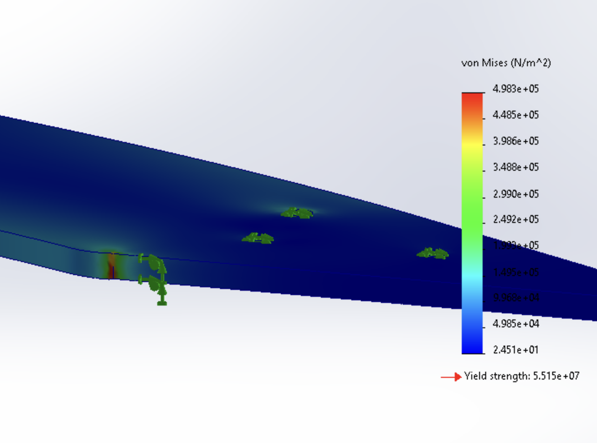
ANSYS & FEA Simulation
Conducted structural simulations in ANSYS and SolidWorks to validate load paths and identify stress concentrations. Results directly informed major geometry changes and design decisions between early and refined iterations, ensuring safe and efficient operation.
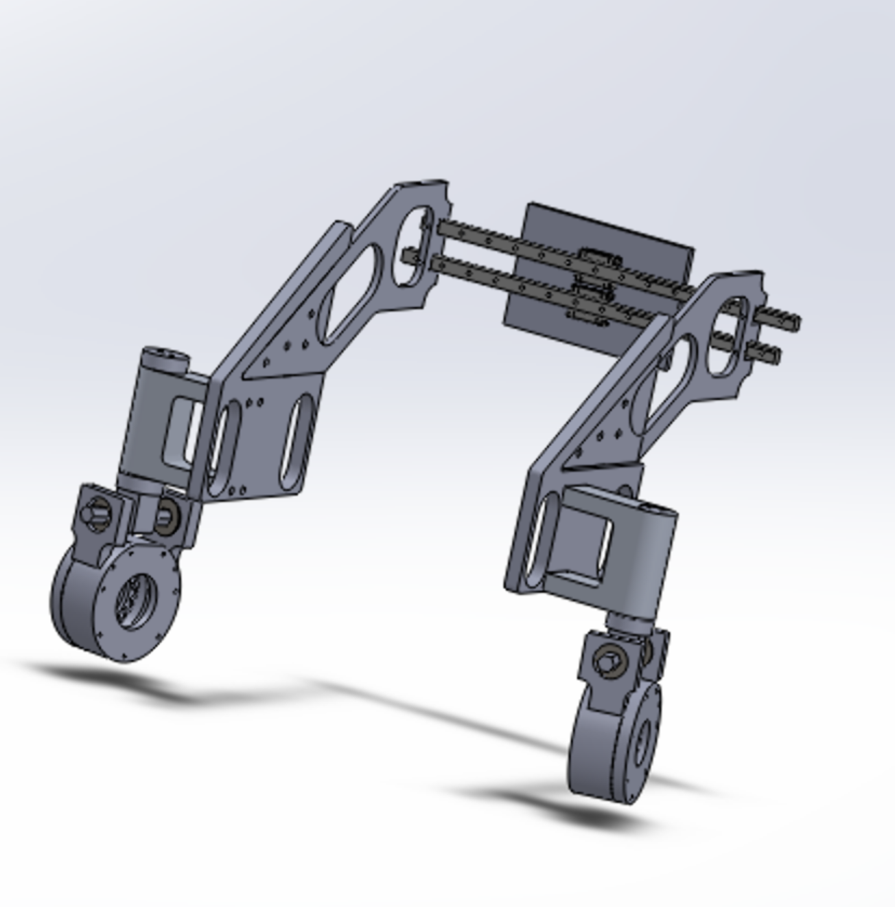
CAD Version 2 (Optimized)
Heavily refined design with significant optimization to mass, structural efficiency, and load paths. Geometry was redesigned around real manufacturing constraints, resulting in a configuration that is now fully machinable while maintaining functional and ergonomic requirements.
Fabrication Phase
Manufacturing (In Progress)
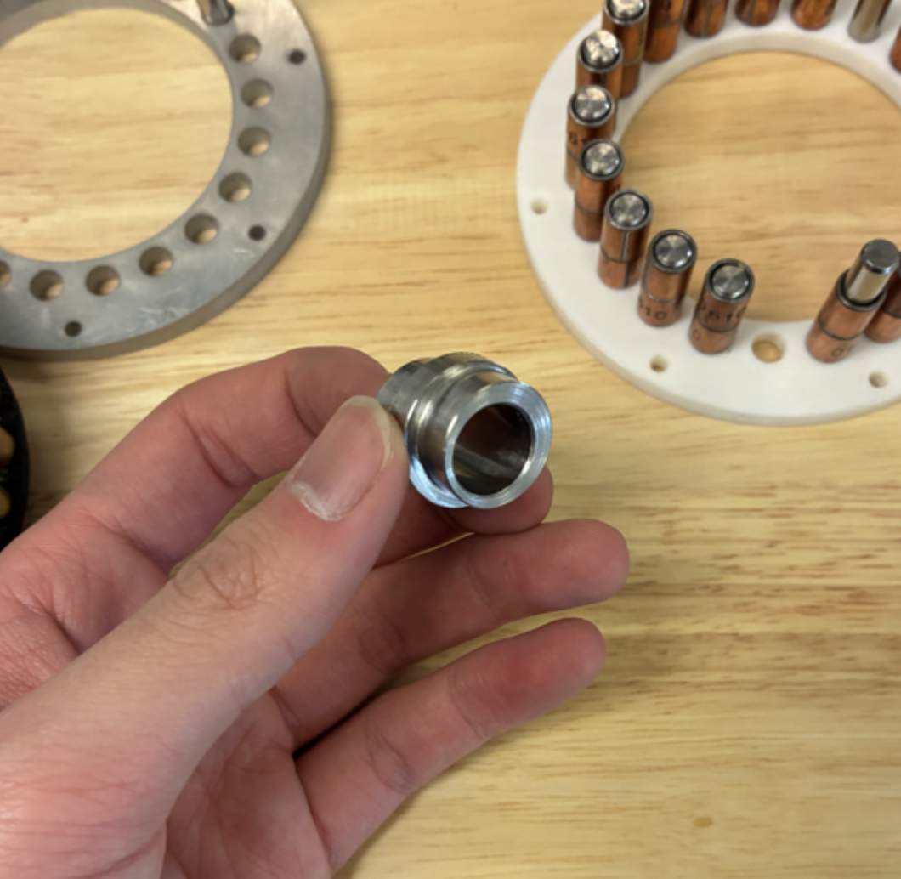
CNC Machining
Manufacturing planning underway; components are being designed around achievable tolerances and practical fixturing constraints for precision fabrication.
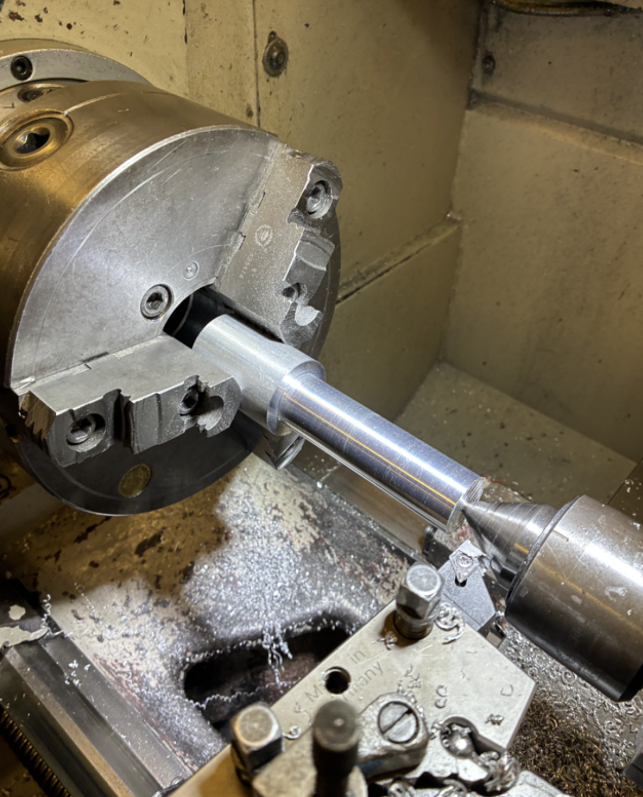
Lathe Work
Future fabrication will include simple turned components such as spacers and shafts once final dimensions are locked in and design freeze is achieved.
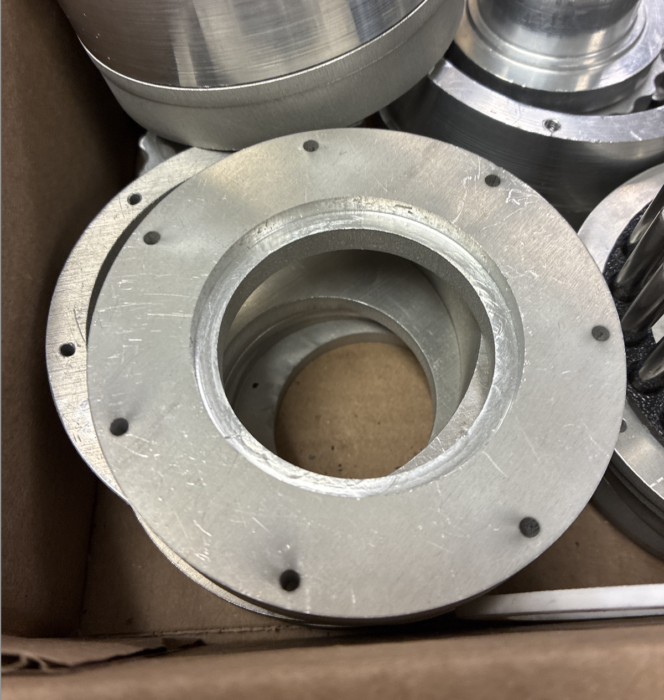
Manual Milling
Prototyping strategies are being evaluated; fabrication will proceed once the design reaches full design freeze and manufacturing readiness review.
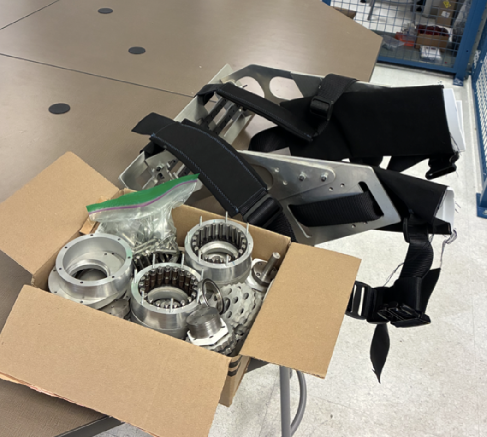
Final Assembly
System integration and validation will begin after fabrication of the finalized mechanical components. All subsystems will be tested to ensure performance meets design specifications.
Team Leadership
Leadership & Management
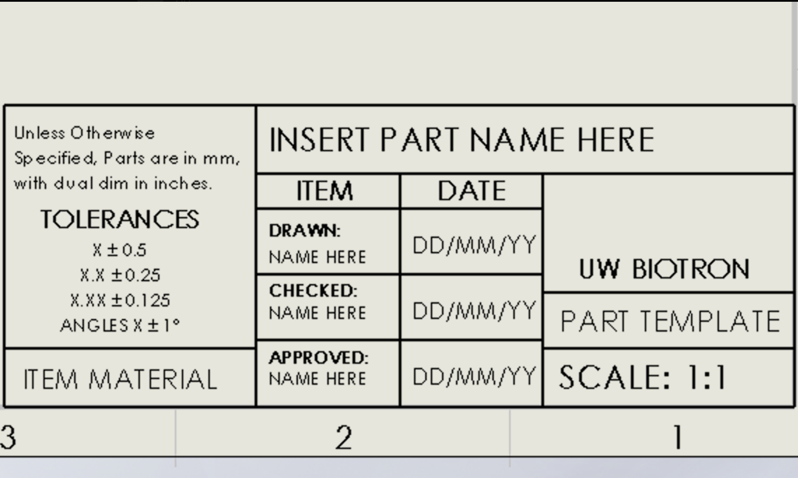
Manufacturing & CAD Oversight
Established CAD standards, reviewed designs, and supervised technical direction across mechanical subteams. Ensured consistency in modeling practices and design quality across the organization.
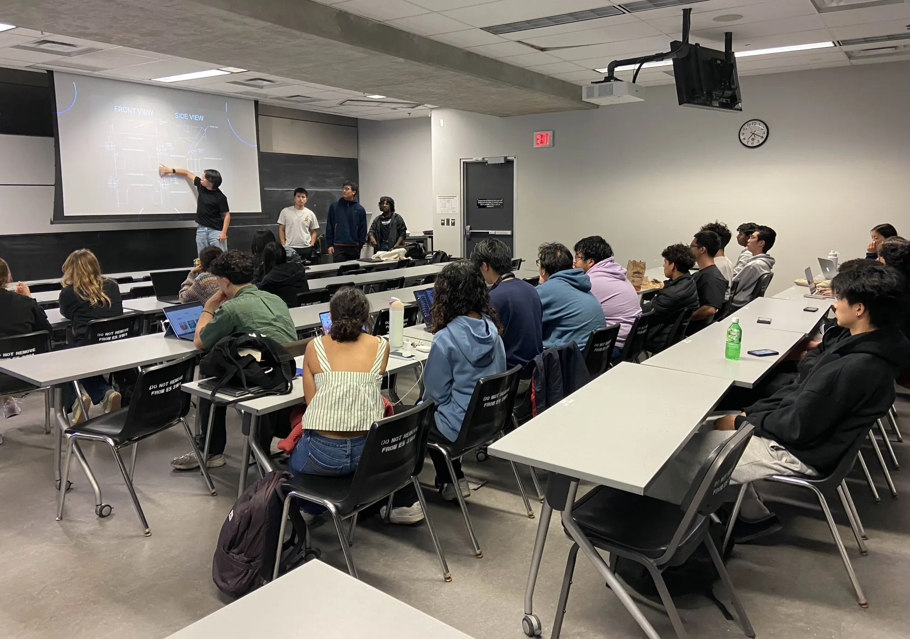
Team Leadership
Led interdisciplinary coordination, managed milestones, and provided technical mentorship across a 20+ member team. Fostered a collaborative environment focused on technical excellence and continuous improvement.
Team Highlights
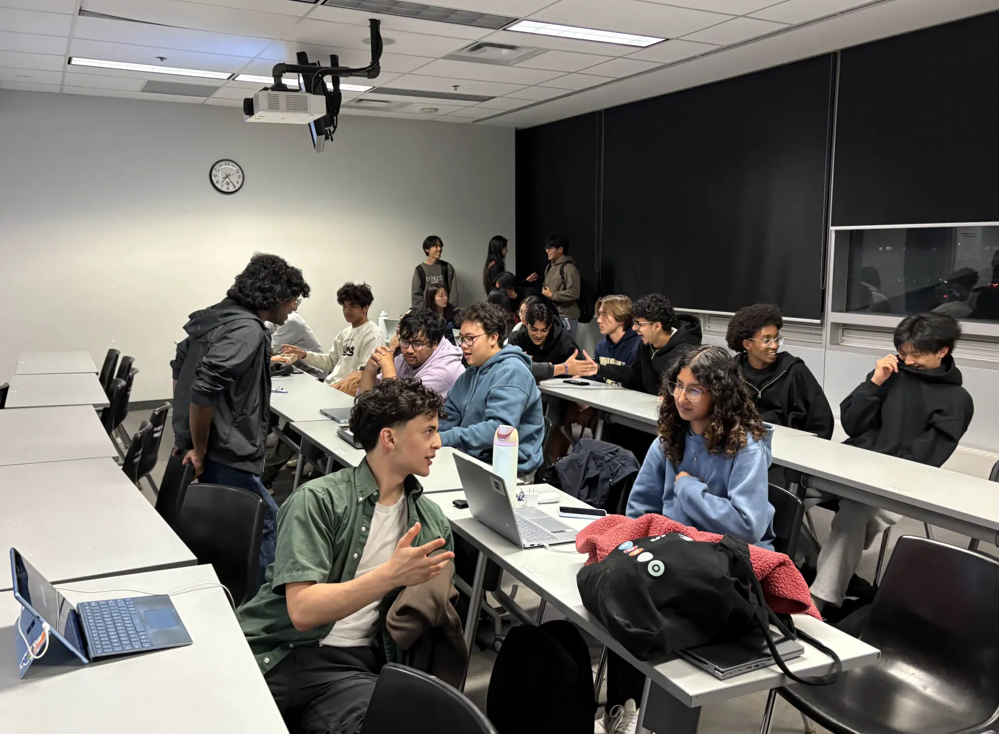
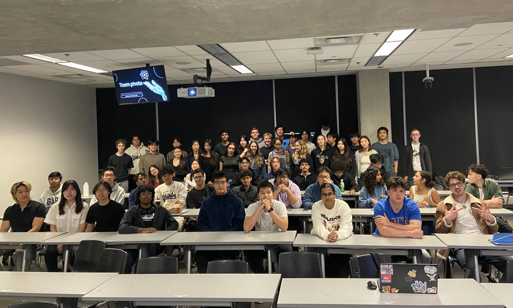
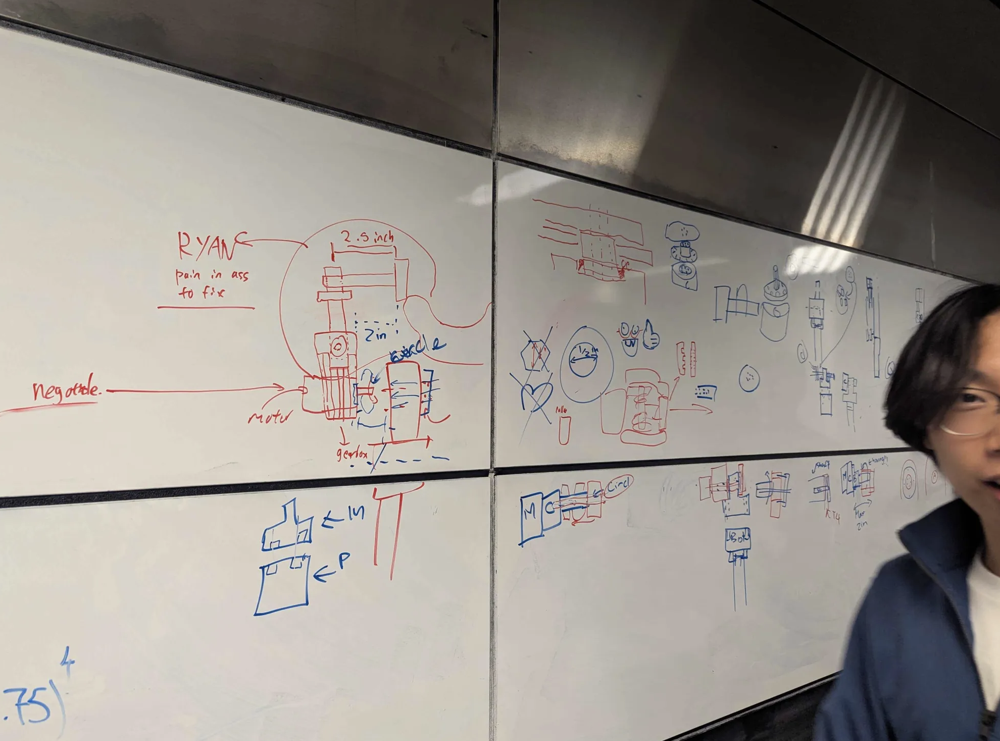